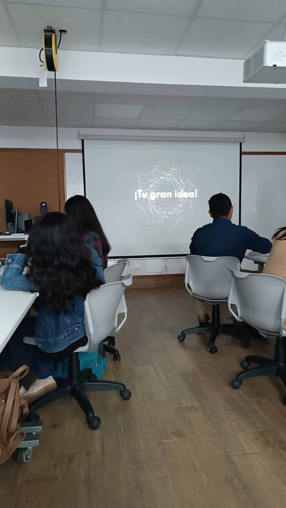
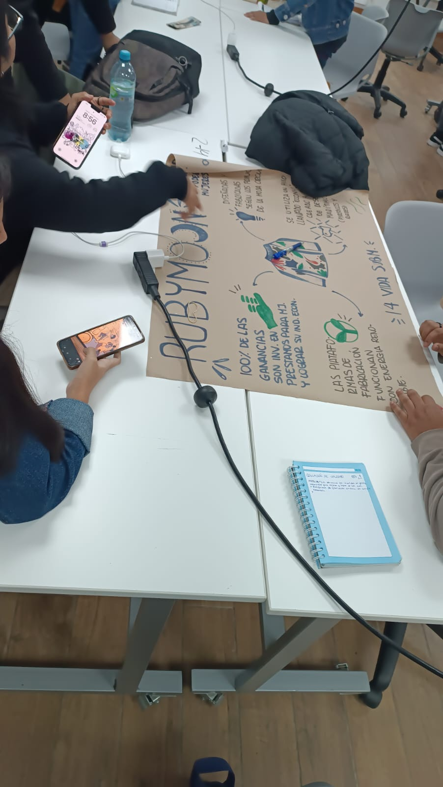
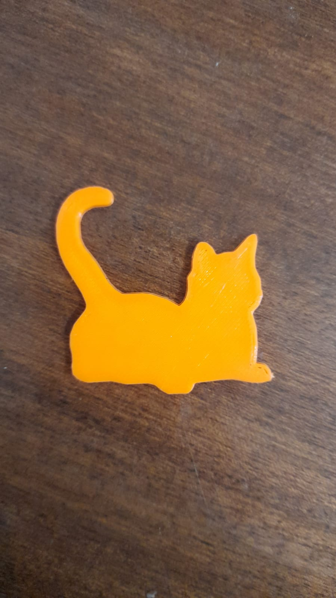
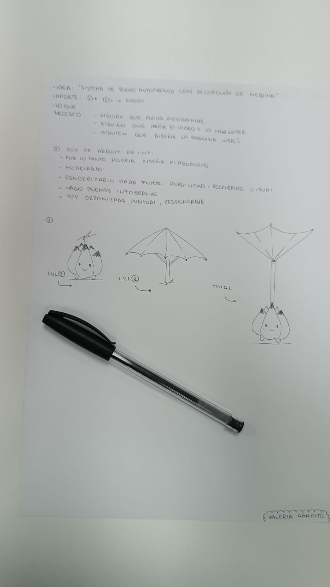
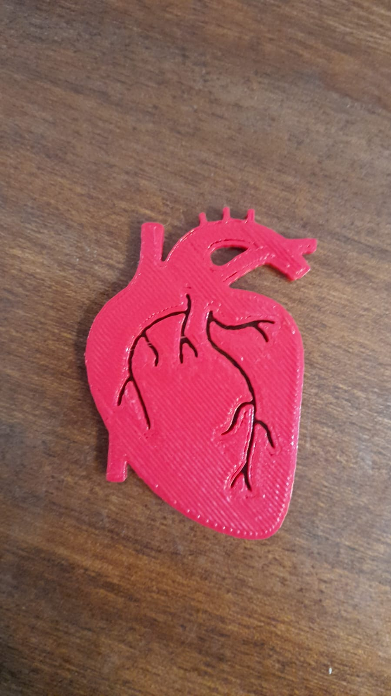
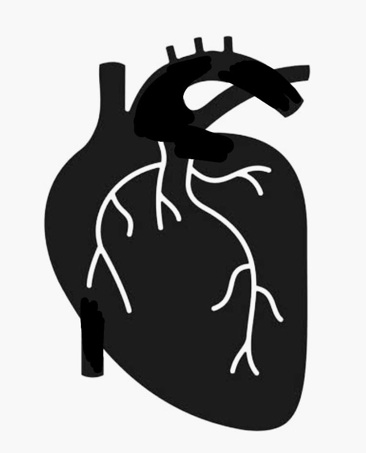

1ER PROMEDIO💜
MISIÓN 2-SIMULACRO DE CRISIS ODS
Segunda misión, Simulacro de crisis global (ODS) una actividad en grupo nuevamente (al azar) conformado por 4 personas de distintas carreras 😄. Lo primero que hicimos fue escoger la ODS con la que trabajaríamos de forma aleatoria, la que nos tocó trabajar fue "14 VIDA SUBMARINA" con mi equipo trabajamos rápidamente para encontrar una marca que represente bien a esta ODS, encontramos una llamada "RUBYMOON" marca comprometida con el planeta y curiosamente cumpliendo las 17 ODS, pero principalmente la 14 que era de la que teníamos que hablar, gestionamos rápidamente nuestro trabajo en equipo y pudimos terminar rápidamente el papelote, nos dividimos el trabajo y nos organizamos luego, compartiendo opiniones y decidiendo que decir, fuimos os 2dos en exponer y nos fue muy bien, así fue como finalizo nuestra actividad. Simultáneamente a esto imprimí por 2da vez y ahora configuré sola la impresora para poder mandar mi pieza, se imprimió exitosamente. |


 |
1ER PROMEDIO💜
MISIÓN 3-IDEA PERSONAL
Tercera misión, Idea personal (actividad individual) el docente nos brindó una hoja de papel para poder plasmar una idea revolucionaria y brindar soluciones a una problemática, se tenía que especificar qué es lo que necesitabas para desarrollarla (carencias) y por último lo que tu podías ofrecer. Seguido a eso se generó una actividad para exponer por puntos, vender de manera correcta la idea de un compañero al azar y dar a conocer que es lo que necesiten (carencias) para que así todos tengan conocimiento de los talentos y necesidades del compañero. Finalmente se dio a conocer a los 3 primeros ganadores, pues todos en el salón votaron por sus favoritos, ¡obtuve el primer lugar gracias a los votos de mis compañeros!🏆💡😄 |


 |
2DO PROMEDIO🖥️
MISIÓN 1-EJERCICIOS EN TINKERCAD
En esta misión, usamos TINKERCAD Lo que se necesito para la primera mision del Segundo promedio fue practicar diversos ejercicios en Tinkercad, uno de estos fue lograr ue un LED se encienda usando distintas fuentes de energia, como en este caso yo utilice una papita 😄 entre otros, no pude asistir a esta clase pero hice los ejercicos correspondientes del dia!👍 cada fuente de energia debia ser diferente y tener un voltaje diferente, todo esto fue comprobado por el multimetro. |


|
2DO PROMEDIO🖥️
MISIÓN 2- CIRCUITO EN SERIE Y PARALELO
En esta misión, utilice TINKERCAD puesto que falte esta clase, la consigna era crear un circuito en paralelo y en serie mis compañeros de grupo me apoyaron enviandome imagenes de lo que habian realizado ese dia, lo que desarrollare individualmente sera un circuito en serie y en paralelo de resistencias, logrando asi cubrir mi falta del dia jueves 💡 |


|
2DO PROMEDIO🖥️
MISIÓN 3- CIRCUITOS EN CLASE
Esta misión fue grupal, lo que realizamos fueron diferentes circuitos con el ARDUINO UNO utilizamos diferentes componentes y creamos sus codigos para su correcta programación utilizamos por primera vez en clase el buzzer y fue divertido e interesante poner diferentes frecuencias para que se logre un sonido, mis compañeros y yo tratamos de hacer una canción y lo logramos!😎 luego realizamos ejercicios para que los LEDs se enciendan por turnos como un semáforo y para culminar la clase el profesor pidio juntar ambos circuitos con una correcta programación para que cada vez que presiones el pulsador suene y se prenda un LED, fue bastante divertido y dificil para nosotros, pero luego de 4 intentos logramos satisfactoriamente realizar este ejercicio. |


|